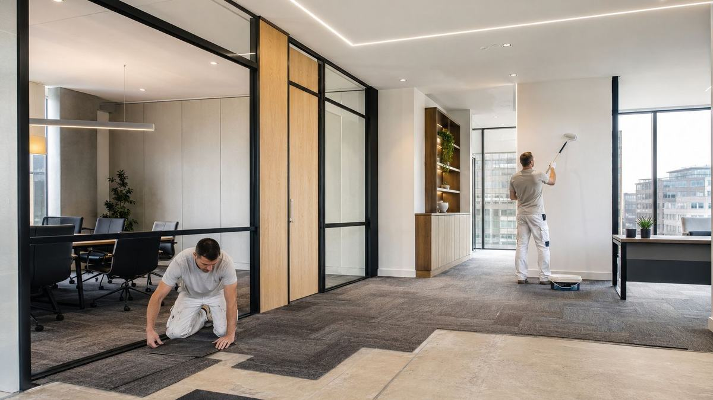

Home / Services
Property maintenance
Planned and reactive maintenance for landlords, businesses and homeowners across Limerick and Kerry - coordinated through one number.
Buildings do not fail on a schedule
A blocked gully in October. A failed socket the week a tenant moves in. A car park that has quietly worn through to the base course. The work is constant and it rarely arrives one job at a time - which is why the hard part is almost never the repair itself, it is finding someone who will take responsibility for all of it and turn up when they said they would.
Planned work is the cheap kind
Almost every expensive repair started as a cheap one that nobody got to. Gutters clear before autumn, exterior paint renewed before the weather gets behind it, line markings refreshed before they fade to nothing. Planned preventative maintenance is unglamorous and it is where the money is saved.
Reactive work is the other half
Then there is what you cannot plan for. Escaping water, storm damage, a break-in repair, anything that makes a property unsafe or unlettable. Emergency call-outs are available 24/7, and for those the phone is always faster than a form.
How the job runs
In order, and in writing.
Describe it once
One call or one form. You do not have to diagnose it for us.
We come and look
A free site visit and assessment. If it needs more than one trade, we scope all of them.
One itemised quote
Every trade on one document, so you can see what you are paying for and why.
We sequence and supervise
Trades arrive in the right order. You are not the one chasing the plasterer.
Final walkthrough
We go through the finished work with you before we call it done.
Before you get quotes
What determines the price.
We do not publish figures, because a figure without a site visit is a guess. These are the variables that actually move the number - worth understanding whoever you end up using.
Access
How easily materials, machinery and people reach the work. A back garden reached through a house costs more than a driveway you can park on.
What is behind it
Opening up a wall or lifting a floor sometimes reveals the actual problem. A good quote says what happens if it does.
Whether it is one trade or four
Coordinated multi-trade work carries scheduling cost, but far less than the delay of running them yourself.
Planned versus emergency
Scheduled work is always cheaper than a call-out at 2am. That is not a surcharge, it is the cost of dropping everything.
Materials and specification
Like-for-like replacement versus an upgrade. We will tell you where spending more actually lasts longer and where it does not.
When you don't need us
If your problem is a single, simple fault and you already have a trusted tradesperson for it, use them. We are worth calling when the job spans trades, when nobody will take ownership of the whole thing, or when you have run out of patience chasing people. We would rather tell you that than quote for work you do not need.
Questions
Straight answers.
Do you cover Kerry as well as Limerick?
Yes. We are based in Ardagh, Co. Limerick and work throughout the county and into Kerry, including Tralee, Listowel, Castleisland and the surrounding areas.
Do you take on small jobs?
Yes. There is no minimum job size, and quotes are free whether the job is an afternoon or a full refurbishment.
How quickly can you attend an emergency?
Emergency call-outs are available 24/7. Call rather than emailing for anything urgent - it is the fastest route to us.
Do you charge for quotes or site visits?
No. Site visits, assessments and written quotes are free and carry no obligation.
Can you work around a business that has to stay open?
Yes. Commercial work is routinely phased or scheduled outside trading hours so the premises keeps operating.
Often needed alongside
Where we work
Limerick and Kerry.
Based at the Old Creamery Enterprise Centre in Ardagh, Co. Limerick, working across the county and into Kerry.
Limerick City · Ardagh · Adare · Newcastle West · Rathkeale · Askeaton · Croom · Kilmallock · Abbeyfeale · Foynes · Patrickswell · Castleconnell · Caherconlish · Bruff · Dromcollogher · Pallaskenry · Glin · Shanagolden · Athea · Annacotty · Murroe · Cappamore · Tralee · Killarney · Listowel · Castleisland · Abbeydorney · Tarbert
Tell us what needs doing.
Free site visit, free assessment, itemised quote. No obligation either way.
Something urgent? Call - 24/7 emergency call-outs.